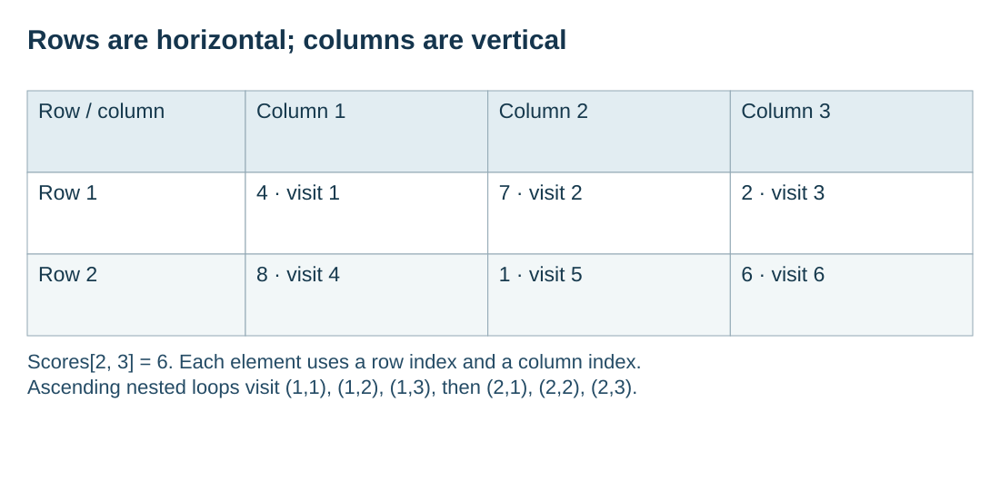

Assign a meaning to each dimension
S10.04.A01
Visual overview
Rows are horizontal; columns are vertical

Visual transcript
- Row / column: Row 1; Column 1: 4 · visit 1; Column 2: 7 · visit 2; Column 3: 2 · visit 3.
- Row / column: Row 2; Column 1: 8 · visit 4; Column 2: 1 · visit 5; Column 3: 6 · visit 6.
- Scores[2, 3] = 6. Each element uses a row index and a column index.
- Ascending nested loops visit (1,1), (1,2), (1,3), then (2,1), (2,2), (2,3).
Core explanation
Choose a two-dimensional array when two independent positions identify an element. In Scores[Row, Column], let rows represent pupils and columns represent tests. DECLARE Scores : ARRAY[1:2, 1:3] OF INTEGER stores six scores, with the first index selecting the pupil and the second selecting the test.
Rows run horizontally across a displayed table and columns vertically down it. Scores[2,3] is the second pupil's third test score, not the third pupil's second test. State each dimension's meaning before writing code so every reference uses the same convention.